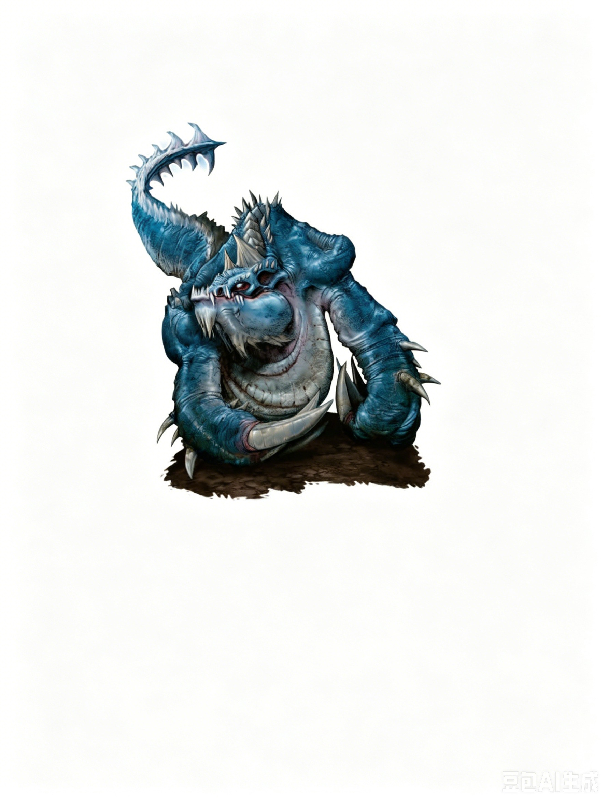

大型魔法兽（龙血） | 挑战级数 9一个巨大的生物从沙中滑动而来，头部酷似蓝龙，长着两只巨大的爪子，移动时仿佛在水中游泳。它的尾巴尖端如同巨大的狼牙棒，上面流动着可见的电流。
蓝龙末裔掘地者 ―― 永远守序邪恶 (LE)。
| 生命骰 | 12d8+48（114HP） |
| 先攻 | +2 |
| 速度 | 30 英尺 (6格)，掘地 20 英尺 |
| 防御等级 | 25，接触 11，措手不及 23（�C1体型，+2敏捷，+14天生） |
| 基本攻击/擒抱 | +12 / +23 |
| 近战攻击 | 尾击 +18 (1d8+10/19�C20 外加电击) 和 两次爪击 +17 (2d8+3) |
| 占据/触及 | 10 英尺 / 5 英尺 (尾击 10 英尺) |
| 特殊攻击 | 多重攻击 (Combat Reflexes)、精通擒抱、电击 (Shock)，闪电扫荡 |
| 特殊能力 | 黑暗视觉 60 英尺、昏暗视觉、震颤感知 60 英尺；免疫：闪电；电击护盾、提亚玛特的祝福 |
| 豁免 | 强韧 +12，反射 +10，意志 +5 |
| 属性 | 力量 25，敏捷 15，体质 19，智力 3，感知 8，魅力 11 |
| 技能 | 聆听 +4，察言观色 +4，侦查 +4 |
| 专长 | 多重攻击、精通重击 (尾击)、钢铁意志、武器专攻 (爪击) |
| 语言 | 龙语 |
| 进化 | 13�C17HD (大型)；18�C30HD (超大型) |
改进擒抱 (Ex)：蓝龙末裔掘地者用爪击命中不大于自身一个体型等级的目标后，可以作为自由动作尝试擒抱，不会引发借机攻击。
电击 (Su)：蓝龙末裔掘地者的尾击额外造成 2d6 点闪电伤害。如果尾击造成重击，还会额外造成 1d10 点闪电伤害。
闪电扫荡 (Lightning Sweep, Su)：每日 3 次，标准动作，60 英尺锥形范围，造成 6d6 点闪电伤害，反射豁免 DC 20 减半。豁免 DC 基于体质。每额外增加 2HD，伤害提升 1d6。
电击护盾 (Electricity Shield, Su)：蓝龙末裔掘地者的身体产生强大的电流，对近距离的生物造成伤害。任何以身体或武器攻击蓝龙末裔掘地者，或尝试擒抱它的生物都会自动受到 2d6 点闪电伤害 (反射 DC 20 减半)。使用金属武器的生物在豁免检定中额外承受 �C2 环境罚值。此能力每轮只会对同一生物触发一次伤害。
提亚玛特的祝福 (Tiamat's Blessing, Su)：所有距离蓝龙末裔掘地者 5 英尺范围内或骑乘在其上的提亚玛特末裔都会获得电击 electricity 免疫。
蓝龙末裔掘地者以成群的形式游荡于沙漠荒地，常被蓝龙用作侦查其领地的工具。其他提亚玛特末裔则利用蓝龙末裔掘地者挖掘防御工事或建造玻璃纪念碑，以此献给他们的恐怖女王提亚玛特。
策略与战术：在野外，孤立的蓝龙末裔掘地者会从沙中突然冲出，试图抓住最近的敌人，同时用尾击和闪电扫荡清除其他敌人。如果受到严重伤害（生命值低于 40 点），它会潜入沙下撤退，可能还会拖拽一个敌人一起逃走。
蓝龙末裔掘地者通常以小组行动。它们会保持适当的距离潜伏于地下，然后从多个方向同时发起攻击。这些生物在有龙或更聪明的提亚玛特末裔领导时尤为危险，此时它们的战术会更加精准。它们会集中火力近战攻击一个目标，逐步将其消灭，同时重叠使用闪电扫荡，扩大伤害范围。
生态：蓝龙末裔掘地者通常以小群体形式活动，服从更强大的蓝龙或提亚玛特末裔。这些生物根据年龄、体型和能力分工：较大的成员是优秀的士兵和猎手，而较小、较弱的成员则负责构建和维护群体的巢穴。
蓝龙末裔掘地者是凶猛的食肉动物，但它们可以在没有食物的情况下生存数日甚至数周，因为在巢穴中休息时能量消耗极少。尽管体型庞大，它们对水的需求不高。然而，它们通常潜伏在绿洲或水源附近，等待沙漠中的猎物前来饮水。一旦耗尽某一区域的资源，它们会迁移至下一处有潜力的猎场。
其他提亚玛特末裔会进入蓝龙末裔掘地者的沙漠领地，招募它们加入军队。这些生物还会命令蓝龙末裔掘地者用闪电将沙子熔化成玻璃，建造巨大的纪念碑，以宣示它们对提亚玛特的效忠。
环境：蓝龙末裔掘地者生活在沙漠的最深处，通常靠近绿洲或其他生物聚集的地方。
典型身体特征：平均蓝龙末裔掘地者身高约 5 英尺，长度在 8 到 10 英尺之间，体重可达 4,000 磅。这些生物在幼年时期呈现暗灰色，随着成长，其鳞片逐渐变为深蓝色。成年个体在阳光下会呈现珍珠般的光泽。和龙一样，蓝龙末裔掘地者随着年龄增长会变得更大、更强。它们会像巨蛇一样蜕皮，随着每次蜕皮，其力量和体型都会进一步增强。
阵营：蓝龙末裔掘地者总是守序邪恶 (Lawful Evil)。这些生物高度重视忠诚和服从。通常，它们与蓝龙的合作使其目标与龙族主人保持一致。当它们独立行动时，更关心觅食而不是控制领地。
典型财宝：蓝龙末裔掘地者的财宝符合其挑战等级 (CR)，总价值约为 4,500 金币。这些财宝大多散落在过去受害者的遗骸中，部分埋藏在它们潜伏的绿洲周围的沙土中。
无论是单独行动还是成群进攻，蓝龙末裔掘地者总是尝试利用周围地形获得最大优势。它们通常以两到四只的小群体活动。蓝龙末裔掘地者也作为提亚玛特军队的突击部队，能够挖掘进入敌方堡垒，从内部摧毁敌人。
单独行动 (EL 9)：一只蓝龙末裔掘地者可能潜伏在蓝龙巢穴入口附近，为其群体寻找新的狩猎场，或发起初步突袭以评估一处堡垒或定居点的防御能力。
守卫小队 (EL 11�C13)：蓝龙或其他提亚玛特末裔有时会将蓝龙末裔掘地者编组成巡逻单位，负责守卫它们的领地。
EL 13：一支由四只蓝龙末裔掘地者组成的小队在它们的女主人“雷霆玫瑰” (Thunder Rose) 蓝龙巢穴周围巡逻。它们的任务是阻击任何潜在威胁，并每天报告任何它们无法应对的强大生物的动向。
在艾伯伦：蓝龙末裔掘地者游荡在希恩德瑞克 (Xen'drik) 内陆一片隐秘的沙漠中，等待他们的蓝龙主人从阿贡尼森 (Argonnessen) 归来，带领它们对抗依然栖息在这片大陆丛林中的巨人。
在费伦：蓝龙末裔掘地者活跃于 Calim 沙漠深处，据信它们在这片荒芜之地服务于蓝龙主人的命令。有学者推测，其中一支蓝龙末裔掘地者群体已经被一位强大的木乃伊领主控制，并被转化为不死生物。
角色可以通过 神秘知识 (Knowledge (Arcana)) 了解更多关于蓝龙末裔掘地者的信息。如果角色能辨认出这些生物的起源，还可以通过 宗教知识 (Knowledge (Religion)) 获得更多情报。成功的检定揭示以下内容，包括较低 DC 的信息：
奥术知识：
DC 14：这种生物是蓝龙末裔掘地者，一种与蓝龙有关的掠食性魔法兽。此结果揭示所有魔法兽的特性。
DC 19：蓝龙末裔掘地者免疫闪电。它们的尾巴能产生强大的闪电伤害，并能通过尾部扫荡释放锥形电击。
DC 24：蓝龙末裔掘地者的身体会产生大量电流，当其在近战中被击中时，电流会从其体内弧形跃向攻击者。
DC 29：蓝龙末裔掘地者会尝试将单个敌人拖入沙中。
宗教知识：
DC 14：蓝龙末裔掘地者是提亚玛特的末裔之一。
DC 19：蓝龙末裔掘地者有时与提亚玛特的信徒同行，通常是蓝龙。
DC 24：沙漠最深处矗立着完全由玻璃组成的巨型建筑物，这些建筑与蓝龙末裔掘地者对提亚玛特的崇拜密切相关。